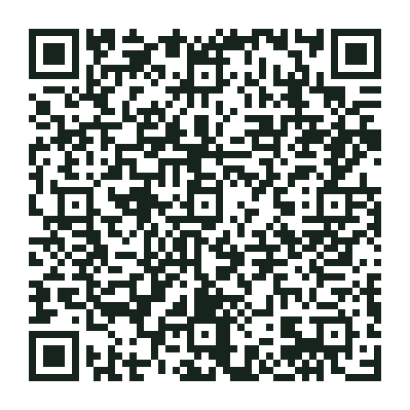

WAOOD ALWARD
وعود الورد
المدينة المنورة · ورد وهدايا

امسح الرمز لتصفّح المعرض
وتجهيز تفاصيل هديتك.
https://az212z.github.io/saudi-floral-signature-ten-20261124/waood/
تصور مستقل غير معتمد من المحلالمدينة المنورة · ورد وهدايا

امسح الرمز لتصفّح المعرض
وتجهيز تفاصيل هديتك.
https://az212z.github.io/saudi-floral-signature-ten-20261124/waood/
تصور مستقل غير معتمد من المحل